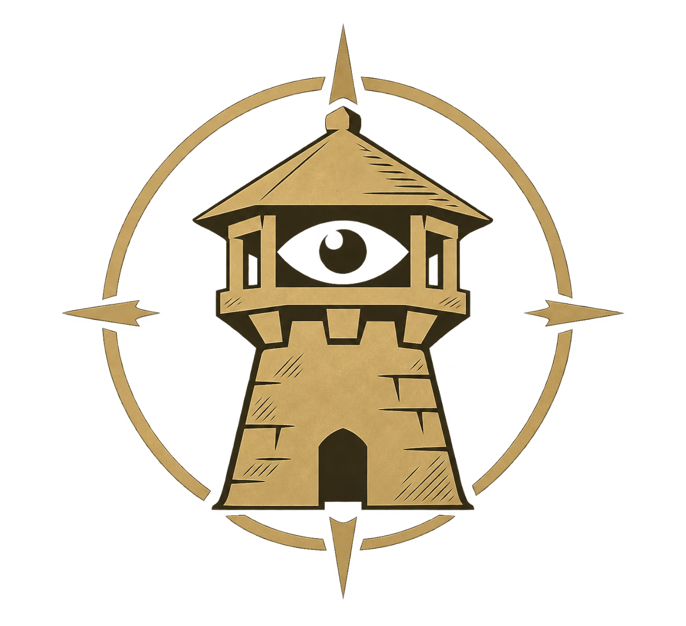

Free
Conocé la partida y a sus jugadores.
Tu cuenta en el juego y cómo cambiarla.
Conocé a tu rival antes de entrar.
Entendé tu rendimiento al terminar.

El overlay usa esta cuenta para reconocerte en el roster y mostrar tu ELO de RM 1v1.
Elegí qué información querés ver. Cada dato indica su muestra y cada consejo explica qué observación lo respalda.
Al terminar, el informe aparecerá acá y en el overlay.
Importá un informe JSON compatible con esta partida. El análisis directo de .aoe2record todavía no está integrado; las métricas disponibles se muestran con su fuente.
Consultando las funciones disponibles de esta versión.
Conocé la partida y a sus jugadores.
Profundizá el análisis y aprendé de tus partidas.
La contratación todavía no está habilitada.
El plan habilita funciones. La disponibilidad de los datos depende de la muestra, el modo de juego y los replays analizados.
Se aplica al instante al overlay. El centro de mando conserva su identidad para que encuentres todo en el mismo lugar.
Qué tanto se transparenta el panel sobre el juego. 95% es un buen punto.
Nunca en media partida: si estás jugando, se aplica sola al terminar.
La tarjeta se oculta a los 0:20. Si querés leerla con calma durante la partida, podés dejarla visible hasta los 0:40.